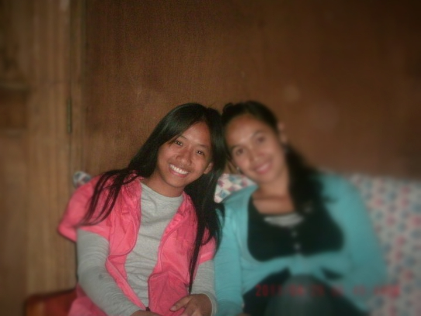

When I was a baby my parents say that I looked like a boy because I didn't have much hair that is why they had my ears pierced. I was born in Agawa, Mt. Province but after some years, my family moved to Pagui, Pedlisan, Maddela, Quirino where I had the most of my childhood memories. But after five years, after finishing third grade, my family moved again to Nayon, Lamut, Ifugao where I spent the rest of my elementary years and where we live until now.

I went to IPSHS for my secondary education. My school was two rides away from home that's why my parents decided to let me stay at a boarding house. But after a while, I frequently went home (even during school days) that's why my parents just decided to let me go to school by commuting. Also, it is in high school where I met the most bizarre and craziest friends. There were only 36 of us classmates during first year high school and only 27 of us graduated. We were only few that's why all of us were really close that until now, we see to it that every year, we always have a reunion.
In the future, if not working for an organization/company, I hope to become a manager of my own farm. But nothing is certain yet so whatever will be will be as long as I am happy and contented. Whatever God is planning for me, so be it.